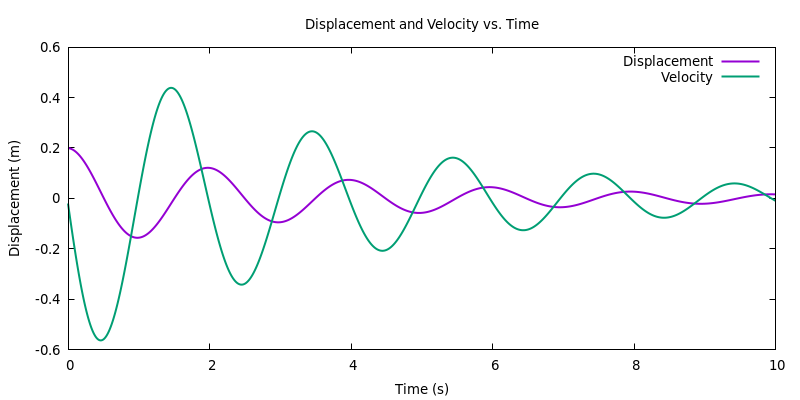

// 包含標準輸出入程式庫的標頭文件
#include <stdio.h>
// 主函式
int main() {
// Open a file to write displacement and velocity data
FILE *outputFile = fopen("motion_data.txt", "w");
if (!outputFile) {
fprintf(stderr, "Failed to create data file.\n");
return 1;
}
// Simulate motion for 10 seconds and calculate displacement and velocity, while writing data to the file
double x = 0.2; // Initial displacement
double v = 0.0; // Initial velocity
double dt = 0.01; // Time step
double t = 0.0; // Time
while (t <= 10.0) {
double acceleration = (-10.0 * x - 0.5 * v) / 1.0; // Modified system parameters here
v += acceleration * dt;
x += v * dt;
fprintf(outputFile, "%lf %lf %lf\n", t, x, v);
t += dt;
}
// Close the data file
fclose(outputFile);
// Start a Gnuplot process using popen
FILE *gnuplotPipe = popen("gnuplot -persistent", "w");
if (!gnuplotPipe) {
fprintf(stderr, "Failed to start Gnuplot.\n");
return 1;
}
// Use Gnuplot plotting commands, specify font and output as PNG
fprintf(gnuplotPipe, "set terminal pngcairo enhanced font 'default,10' size 800,400\n");
fprintf(gnuplotPipe, "set output './../images/motion_plot.png'\n");
fprintf(gnuplotPipe, "set title 'Displacement and Velocity vs. Time'\n");
fprintf(gnuplotPipe, "set xlabel 'Time (s)'\n");
fprintf(gnuplotPipe, "set ylabel 'Displacement (m)'\n");
fprintf(gnuplotPipe, "plot 'motion_data.txt' using 1:2 with lines lw 2 title 'Displacement', \
'motion_data.txt' using 1:3 with lines lw 2 title 'Velocity'\n");
// Close the Gnuplot process
fprintf(gnuplotPipe, "exit\n");
pclose(gnuplotPipe);
return 0;
}
